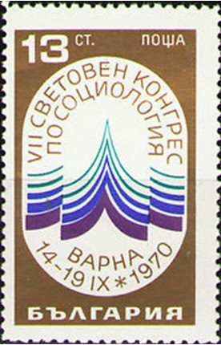
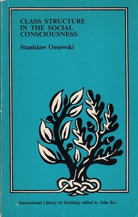
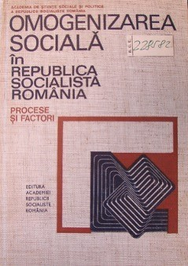
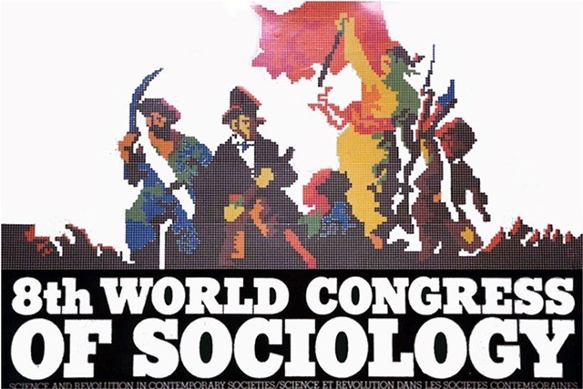
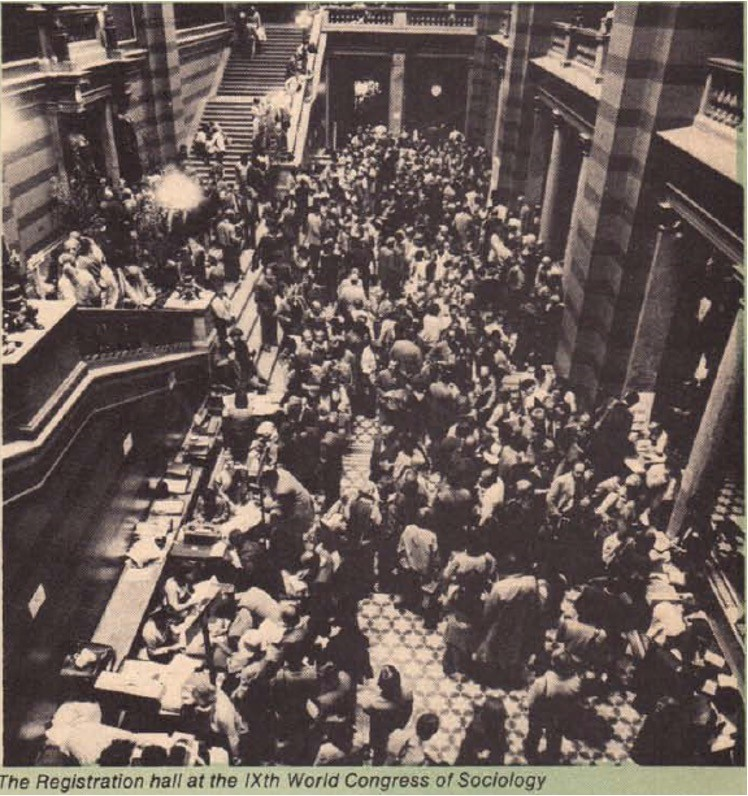
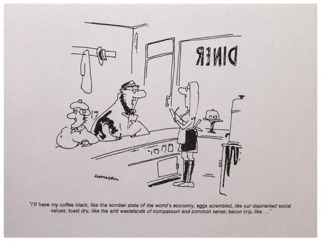
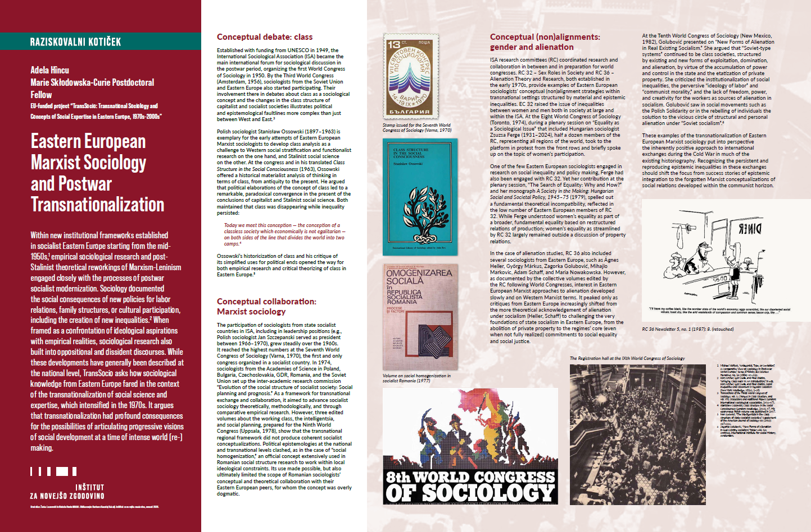

Adela Hîncu *
Within new institutional frameworks established in socialist Eastern Europe starting from the mid-1950s,1 empirical sociological research and post-Stalinist theoretical reworkings of Marxism-Leninism engaged closely with the processes of postwar socialist modernization. Sociology documented the social consequences of new policies for labor relations, family structures, or cultural participation, including the creation of new inequalities.2 When framed as a confrontation of ideological aspirations with empirical realities, sociological research also built into oppositional and dissident discourses. While these developments have generally been described at the national level, TransSocio asks how sociological knowledge from Eastern Europe fared in the context of the transnationalization of social science and expertise, which intensified in the 1970s. It argues that transnationalization had profound consequences for the possibilities of articulating progressive visions of social development at a time of intense world (re-)making.

Established with funding from UNESCO in 1949, the International Sociological Association (ISA) became the main international forum for sociological discussion in the postwar period, organizing the first World Congress of Sociology in 1950. By the Third World Congress (Amsterdam, 1956), sociologists from the Soviet Union and Eastern Europe also started participating. Their involvement there in debates about class as a sociological concept and the changes in the class structure of capitalist and socialist societies illustrates political and epistemological faultlines more complex than just between West and East.3

Polish sociologist Stanisław Ossowski (1897–1963) is exemplary for the early attempts of Eastern European Marxist sociologists to develop class analysis as a challenge to Western social stratification and functionalist research on the one hand, and Stalinist social science on the other. At the congress and in his translated Class Structure in the Social Consciousness (1963), Ossowski offered a historical materialist analysis of thinking in terms of class, from antiquity to the present. He argued that political elaborations of the concept of class led to a remarkable, paradoxical convergence in the present of the conclusions of capitalist and Stalinist social science. Both maintained that class was disappearing while inequality persisted:

Today we meet this conception — the conception of a classless society which economically is not egalitarian — on both sides of the line that divides the world into two camps.4
Ossowski’s historicization of class and his critique of its simplified uses for political ends opened the way for both empirical research and critical theorizing of class in Eastern Europe.5
The participation of sociologists from state socialist countries in ISA, including in leadership positions (e.g., Polish sociologist Jan Szczepanski served as president between 1966–1970), grew steadily over the 1960s. It reached the highest numbers at the Seventh World Congress of Sociology (Varna, 1970), the first and only congress organized in a socialist country. In 1974, sociologists from the Academies of Science in Poland, Bulgaria, Czechoslovakia, GDR, Romania, and the Soviet Union set up the inter-academic research commission “Evolution of the social structure of socialist society: Social planning and prognosis.” As a framework for transnational exchange and collaboration, it aimed to advance socialist sociology theoretically, methodologically, and through comparative empirical research. However, three edited volumes about the working class, the intelligentsia, and social planning, prepared for the Ninth World Congress (Uppsala, 1978), show that the transnational regional framework did not produce coherent socialist conceptualizations. Political epistemologies at the national and transnational levels clashed, as in the case of “social homogenization,” an official concept extensively used in Romanian social structure research to work within local ideological constraints. Its use made possible, but also ultimately limited the scope of Romanian sociologists’ conceptual and theoretical collaboration with their Eastern European peers, for whom the concept was overly dogmatic.

ISA research committees (RC) coordinated research and collaboration in between and in preparation for world congresses. RC 32 – Sex Roles in Society and RC 36 – Alienation Theory and Research, both established in the early 1970s, provide examples of Eastern European sociologists’ conceptual (non)alignment strategies within transnational settings structured by material and epistemic inequalities. EC 32 raised the issue of inequalities between women and men both in society at large and within the ISA. At the Eight World Congress of Sociology (Toronto, 1974), during a plenary session on “Equality as a Sociological Issue” that included Hungarian sociologist Zsuzsa Ferge (1931–2024), half a dozen members of the RC, representing all regions of the world, took to the platform in protest from the front rows and briefly spoke up on the topic of women’s participation.

One of the few Eastern European sociologists engaged in research on social inequality and policy making, Ferge had also been engaged with RC 32. Yet her contribution at the plenary session, “The Search of Equality: Why and How?” and her monograph A Society in the Making: Hungarian Social and Societal Policy, 1945–75 (1979), spelled out a fundamental theoretical incompatibility, reflected in the low number of Eastern European members of RC 32. While Ferge understood women’s equality as part of a broader, fundamental equality based on restructured relations of production; women’s equality as streamlined by RC 32 largely remained outside a discussion of property relations.
In the case of alienation studies, RC 36 also included several sociologists from Eastern Europe, such as Ágnes Heller, György Márkus, Zagorka Golubović, Mihajlo Markovic, Adam Schaff, and Maria Nowakowska. However, as documented by the collective volumes edited by the RC following World Congresses, interest in Eastern European Marxist approaches to alienation developed slowly and on Western Marxist terms. It peaked only as critiques from Eastern Europe increasingly shifted from the more theoretical acknowledgement of alienation under socialism (Heller, Schaff) to challenging the very foundations of state socialism in Eastern Europe, from the abolition of private property to the regimes’ core (even when not fully realized) commitments to social equality and social justice.
At the Tenth World Congress of Sociology (New Mexico, 1982), Golubović presented on “New Forms of Alienation in Real Existing Socialism.” She argued that “Soviet-type systems” continued to be class societies, structured by existing and new forms of exploitation, domination, and alienation, by virtue of the accumulation of power and control in the state and the etatization of private property. She criticized the institutionalization of social inequalities, the perversive “ideology of labor” and “communist morality,” and the lack of freedom, power, and creativity for the workers as sources of alienation in socialism. Golubović saw in social movements such as the Polish Solidarity or in the rebelling of individuals the solution to the vicious circle of structural and personal alienation under “Soviet socialism”.6
These examples of the transnationalization of Eastern European Marxist sociology put into perspective the inherently positive approach to international exchanges during the Cold War in much of the existing historiography. Recognizing the persistent and reproducing epistemic inequalities in these exchanges should shift the focus from success stories of epistemic integration to the forgotten Marxist conceptualizations of social relations developed within the communist horizon.


* Marie Skłodowska-Curie Postdoctoral Fellow. EU-funded project “TransSocio: Transnational Sociology and Concepts of Social Expertise in Eastern Europe, 1970s–2000s”
1. Michael Voříšek, “Antagonist, Type, or Deviation? A Comparative View on Sociology in Post-War Soviet Europe,” Revue d'Histoire des Sciences Humaines, no. 18 (2008): 85–113.
2. Rory Archer, Igor Duda, and Paul Stubbs, “Bringing Class Back In: An Introduction,” in eds. Rory Archer, Igor Duda, and Paul Stubbs, Social Inequalities and Discontent in Yugoslav Socialism (New York: Routledge, 2016), 1–20.
3. Transactions of the Thirds World Congress of Sociology, vol. 3, Changes in Class Structure, and vol. VIII, Discussions and Additional Papers (London: International Sociological Association, 1956–57).
4. Stanisław Ossowski, Class Structure in the Social Consciousness (London: Routledge, 1963), 97. His eponymous Polish volume was published in 1957.
5. Ivan Szelenyi, “The Intelligentsia in the Class Structure of State-Socialist Societies,” Supplement of the American Journal of Sociology 88 (1982): 287–326.
6. Zagorka Golubević, “New Forms of Alienation in Real Existing Socialism,” folder 644, ISA Archives, International Institute for Social History, Amsterdam.